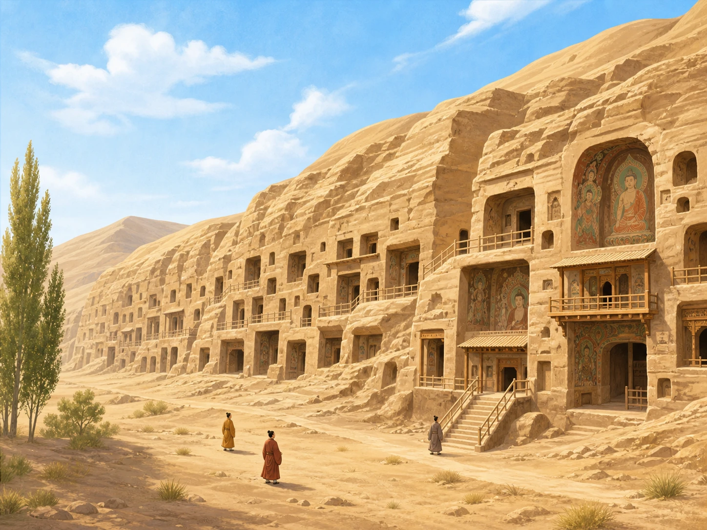
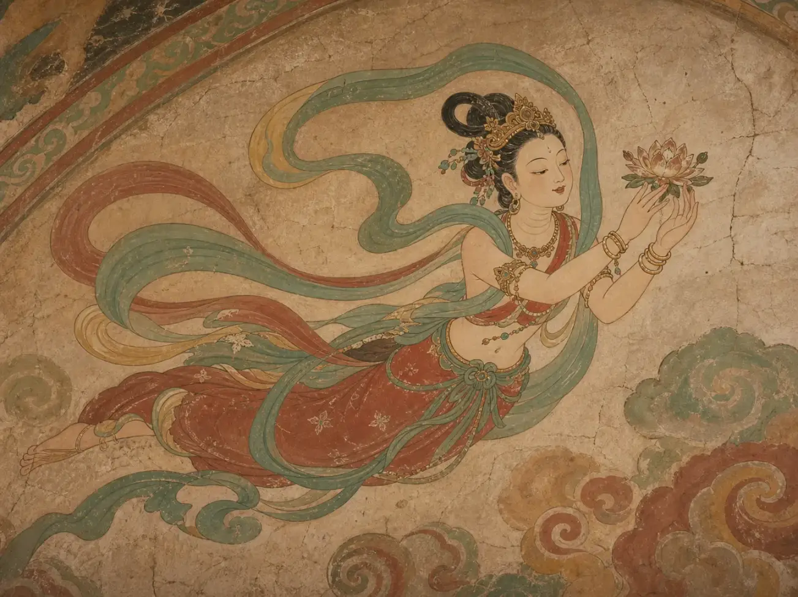
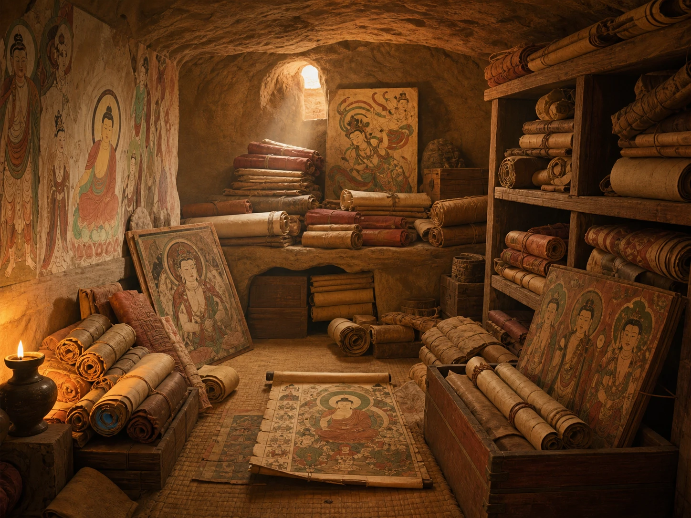

沙漠山崖里，为什么藏着满墙故事？
Why Are Story-Filled Caves Hidden in the Desert?
Page 1
沙漠路边的一排洞窟
A Wall of Caves Beside a Desert Road

The Mogao Caves were cut into a desert cliff near Dunhuang.
很久以前，商人、僧人和旅行者骑着骆驼穿过亚洲。路上有沙漠、有高山，也有一座重要的绿洲城市：敦煌（Dūnhuáng）。绿洲有水，可以让疲惫的人和动物休息。
敦煌附近的山崖上，人们从公元四世纪起陆续开凿洞窟。有人出钱，有人挖洞，有人做泥塑，还有画工站在架子上，把佛教故事、神仙、乐队和旅行生活画满墙壁。这个地方就是莫高窟（Mògāo Kū）。它不是一天建成的，而是许多人用了大约一千年，才留下今天看到的样子。
Long ago, merchants, monks, and travelers crossed Asia by camel. Their roads passed deserts and mountains - and an important oasis town called Dunhuang (Dūnhuáng). An oasis had water, so tired people and animals could rest there.
Beginning in the fourth century, people cut caves into a cliff near Dunhuang. Some paid for the work. Others dug rooms, shaped clay statues, or stood on scaffolds to cover the walls with Buddhist stories, heavenly beings, musicians, and scenes of travel. This place became the Mogao Caves (Mògāo Kū). It was not made in a day. People kept adding to it for about a thousand years.
Page 2
飞天不用翅膀
Flying Without Wings

In Dunhuang murals, flowing scarves and lively poses make heavenly beings seem to fly.
抬头看壁画，空中飞过一群“飞天”（fēitiān）。她们是佛教艺术里的天上乐神。有的弹琵琶，有的吹笛子，有的撒下花朵。奇怪的是，她们没有鸟翅膀。
画工用了别的办法让她们飞起来：长长的飘带在身后转弯，衣裙向上扬，身体像在云中翻转。墙当然没有动，可你的眼睛一跟着飘带走，整座洞窟就像有了风，也有了音乐。
Look up and you may see fēitiān flying across a painted sky. These heavenly musicians come from Buddhist art. Some play the pipa or a flute. Others scatter flowers. Strangely, they have no bird wings.
The painters found other ways to make them fly. Long scarves curl behind them. Skirts lift. Bodies turn as if they are tumbling through clouds. The wall never moves, but when your eyes follow those ribbons, the whole cave seems to fill with wind and music.
Page 3
一扇藏了几百年的小门
A Small Door Hidden for Centuries

Bundles of handwritten scrolls and paintings were stored in the Library Cave.
一九〇〇年，照看洞窟的王圆箓发现一条裂缝。墙后竟有一间封住的小洞，里面塞满成捆的手写书卷、绘画和布幡。它后来被称为藏经洞。
里面不只有佛经，还有信件、账单、历书、练字纸和不同语言的文件。一张旧纸也许只记着一袋粮食，却能告诉我们当时的人买什么、写什么、说什么语言。可惜，许多文物后来被带到世界各地。今天要研究这间小洞，常常得把散落在不同博物馆和图书馆的线索重新拼在一起。
In 1900, Wang Yuanlu, a caretaker of the caves, noticed a crack. Behind a wall was a sealed room packed with bundles of handwritten scrolls, paintings, and banners. It became known as the Library Cave.
The room held much more than Buddhist writings. There were letters, calendars, accounts, handwriting practice, and documents in several languages. A scrap that records one bag of grain may tell us what people bought, wrote, and spoke. Many objects were later taken to collections around the world. Today, studying the little cave often means fitting together clues kept in many museums and libraries.
Page 4
怎样保护一面不能搬走的画？
How Do You Protect a Painting That Cannot Move?
敦煌壁画画在洞窟的墙上，不能像普通画那样装进盒子。沙尘、潮气、游客带来的热和呼吸，都可能让脆弱的颜色慢慢改变。保护人员会检查裂缝、记录温度和湿度，也会限制有些洞窟每天进入的人数。
他们还用高清相机把壁画一小块一小块拍下来，再拼成数字图像。屏幕不能代替站在洞窟里的感觉，却能让更多人看清高处的小人物和乐器，也能留下今天的样子，帮助未来的人发现哪里发生了变化。
Dunhuang's murals are painted on cave walls. They cannot be packed into boxes like ordinary pictures. Sand, moisture, heat, and even the breath of many visitors can slowly change their fragile colors. Conservators check cracks, watch temperature and moisture, and limit how many people enter some caves each day.
They also photograph the walls in thousands of small sections and join the pictures into detailed digital images. A screen cannot replace standing inside a cave, but it lets more people see tiny musicians and figures high above the floor. It also saves a record of how the paintings look today, so future caretakers can notice changes.